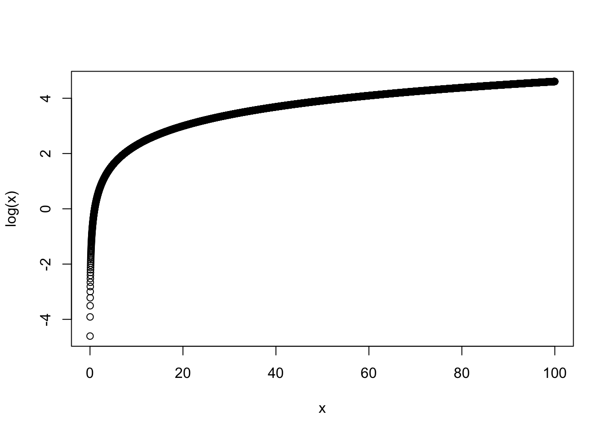

x <- c(1:10000)/100
plot(x, log(x))
In the last session and our exercices, we have presented cases where our dependent variables were continuous : either describing the vote for the far-right in french communes, the median income in those communes, party positions from the Chappel Hill survey (scaled and averaged from 1 to 10), or .
Yet at the end of the class, we have also seen that one of our results was heteroskedastic, and that plotting our residuals vs. our fitted values lead to some weird shapes in the cloud of points. That is due to the fact that our dependent variable, the share of votes in one commune is actually bounded between 0 and 1. A linear regression, by default, does not take these lower bounds into account, which can lead to uncoherent results (e.g.prolonging the linear regression can lead to voting outcomes > 1), and heteroskedasticity.
In practice, many dependent variables in political science are binary ones : a typical case is when you wonder whether an individual has voted for this or that party, or whether an individual voted or not. Seeking to explain these variables with linear regressions would lead to absurd results, and would violate several assumptions about that model.
That is why we use other types of regressions to perform such analyses. The one we will see today is best used to analyse binary outcomes (TRUE/FALSE or 1/0 types of outcomes). It is called the logistic regression.
Before turning to the , it is important to remember what is a logarithm. A logarithm, defined in a certain basis \(a\), is the function
\[\begin{equation} \text{log}_{a}(x) = y \end{equation}\] that satisfies : \[\begin{equation} a^y = x. \end{equation}\]
where a>0. As such, \(\text{log}_a(x)\) is only defined for \(x>0\) values. For instance, the 10-basis logarithm of 1000 is: \[\begin{equation} \text{log}_{10}(1000) = 3 \end{equation}\] because \[\begin{equation} 10^3 = 1000 \end{equation}\] The 2-basis logarithm of 4 is: \[\begin{equation} \text{log}_{2}(4) = 2 \end{equation}\] again because : \[\begin{equation} \text{log}_{2}(4) = 2 \end{equation}\]
The e-basis (Euler’s number) logarithm is generally called \(\text{ln}\), and gives :
\[\begin{equation} \text{ln}(e) = 1 \end{equation}\] and \[\begin{equation} \text{ln}(1) = 0 \end{equation}\]
As such, the logarithm of 1 is always 0, for any basis \(a\) : \begin{equation} _{a}(1) = 0 \begin{equation}
Plotting the log value shows the values of \(\text{ln}(x)\) for values ranging from 0.01 to 100 gives the following graph, which shows that
x <- c(1:10000)/100
plot(x, log(x))
\[\begin{align} \text{ln}(x) \le 0 for x \le 1 \text{ln}(x) > 0 for x > 1 \end{align}\]
Recent heated debates in academia have been about the impact of gender on the vote for the radical right : while some argue that women vote less for the radical right, because of its misogynistic legacy and , others show that this depends on the context, while some authors argue that radical right, other show that the radical right has renewed its electoral appeal towards women, by developing so-called femo-nationalism, - a sort of . This debate has found powerful echoes in the public debate, as shown by the FT’s 2024 paper shown here (Burn-Murdoch, 2024) :

That is why three amazing scholars of Sciences Po have sought to understand whether gender had a positive or negative impact on voting in France, in the European and presidential elections (Piolat, N., Mayer, N., Durovic, A., 2025). How could you do that ?
Imagine seeking to understand what influences voting for a given party at a micro level, in the second round of the legislative elections for instance : you may conduct a poll collecting information about voting among different people, as well as questions regarding the typical “variables” that may characterise voting in general (Mayer, 2007) : age, gender, social class (through socio-professional category), etc. Your whole empirical investigation will therefore seek to understand whether these variables increase the individual propensity to vote for the radical right. Hence, your dependent variable, voting for the radical right, will typically be of a YES/NO type, since your data is collected at the individual level.
If your research puzzle seeks to identify the role of gender on the vote for the radical right, your main independent variable will be gender, and your
A typical case study is for instance . A lot of literature has recently developed over the. That is why researchers from my Center, the CEE, have searched to evaluate
Burn-Murdoch, John. 2024. “A New Global Gender Divide Is Emerging.” Financial Times. https://www.ft.com/content/29fd9b5c-2f35-41bf-9d4c-994db4e12998 (January 30, 2026).
Mayer, Nonna. 2007. “Qui vote pour qui et pourquoi ? Les modèles explicatifs du choix électoral.” Pouvoirs 120(1): 17–27. doi:10.3917/pouv.120.0017.